Learning outcomes
- Understand how calculus can be used to relate kinematic variables.
- What to do when we measure one kinematic variable and need to calculate others.
A 100 m race is timed at ten marks on the track. That is the whole measurement — distance and time. Every other number we care about has to be calculated from it.

Berlin, 2009 — the race behind the numbers on the next slide.
Measuring a 100 m sprint
Ten split times are the only measurement. Speed and acceleration are calculated from them — each graph is the slope of the one above it.
Relationship between displacement and velocity
Graphing can help us determine some important relationships between kinematic variables.
Here is a graph of displacement of an object with respect to time. We can use this graph to determine what the velocity of an object is over different intervals.
We know:
velocity = Δ displacementΔ time = riserun
Therefore velocity is the slope of the displacement graph.
Relationship between velocity and acceleration
Graphing can help us determine some important relationships between kinematic variables.
Here is a graph of the velocity of an object with respect to time. We can use this graph to determine what the acceleration of the object is over different intervals.
We know:
acceleration = Δ velocityΔ time = riserun
Therefore acceleration is the slope of the velocity graph.
Relationship between displacement, velocity and acceleration
From these basic examples we can see that displacement, velocity and acceleration are all related by the slopes of their graphs.
Therefore, the slope between two points on a displacement vs. time graph is equal to the average velocity between those two points.
Therefore, the slope between two points on a velocity vs. time graph is equal to the average acceleration between those two points.
Average and instantaneous
The kinematics equations that we use only take 2 values (final and initial), so we are only taking an average and finding the slope over the 2 values.
However, this may misrepresent what is happening. What if we took the average velocity of the whole trip? v = Δd/Δt = (dfinal − dinitial) / (tfinal − tinitial) = 0 / 6 = 0 m/s
It is correct to say that the average velocity is zero, but it doesn't help to accurately represent the trip. To be more… instantaneous is simply just to take averages over smaller time intervals. And to be even more… instantaneous, smaller still.
What if we broke the trip up into 2 sections and took an average for each? Or 3… 4… 5… 6… How many sections do we need to break it up so that we can find the instantaneous velocity at any point?
Calculus and kinematics
But what if we wanted to find the slope of a line over an infinitely small time interval? This is where calculus comes in handy.
- Time derivative — the instantaneous change in some quantity with respect to time; the change in a kinematic variable over the theoretically smallest change in time.
- Differentiation is the process of calculating derivatives. It can be accomplished using three methods:
- Graphical method
- Analytical method
- Finite difference
Tangents
Before we go any further we need to review tangents. A tangent is a line that: is the best "straight" line approximation of the curve at that point · is the instantaneous slope of the line at any point.
Calculus and kinematics
Graphical method
The smaller the distance between points A and B, the closer we get to an instantaneous value (a tangent).
The line drawn on the curve is a tangent line.
Calculus and kinematics
Graphical method
A graphical method of differentiation is really just drawing tangents on the graph at different points on the function/data. The slope of the tangent at one point on the curve is the instantaneous time derivative — plot it on a second graph and repeat. But this is a time consuming process.
Calculus and kinematics
Analytical method
- Every graph of displacement, velocity and acceleration can be represented both graphically and with an equation (function).
- Think about drawing a line with a graphing calculator — it uses equations.
- The analytical method involves evaluating the equations that define the graph of the kinematic value.
Calculus and kinematics
We know the equation for a straight line. Hover any symbol.
If this were the graph of velocity with respect to time:
Calculus and kinematics
All kinematic equations (or functions) are made up of one or more terms with the form — hover the symbols, then change the equation.
For example, take x(t) = −t3 + 6t2.
There are 2 terms: −t3 and 6t2.
For −t3: c = −1, n = 3.
For 6t2: c = 6, n = 2.
Calculus and kinematics
Back to the equation for a straight line, using velocity.
y = mx + b → v(t) = 2t + b
- v(t) is the velocity as a function of time
- t is time · b is zero
Because b is zero there is really only one term, 2t — so c = 2 and n = 1.
Said another way: for every increase in time the velocity increases by time multiplied by 2.
Calculus and kinematics
What about a more complex equation for velocity?
y = mx2 + b → v(t) = t2 + b
- v(t) is the velocity as a function of time
- t is time · b is zero
There is only one term, t2 — so c = 1 and n = 2.
Said another way: for every increase in time the velocity increases by time-squared.
Calculus and kinematics
Analytical method
If we know the equation of a graph of data in the form c tn, then we can determine the equation of the slope of that line at any time.
What is the implication of this in human movement?
If we can determine an equation for the slope of that line at any time, then we can
- solve for velocity if we have displacement;
- solve for acceleration if we have velocity.
Side note on curve fitting
- In the previous examples it was easy to determine the functions that define the kinematic data.
- In biomechanics data collection we may have data points but can't figure out the equation.
- There are many programs that can fit curves to data and develop an equation that can approximate the data. Excel is one of those programs.
- We will discuss more about this when we talk about signals.
Calculus and kinematics
Differentiation transfer function
To find the time derivative for a kinematic equation, apply the differentiation transfer function to each term in the equation.
That is, multiply each term ctn by n, then subtract 1 from the exponent.
- determine an equation for velocity using displacement;
- determine an equation for acceleration using velocity.
Differentiation transfer function
Find the derivative of d(t) = −t3 + 6t2
- First split the equation into terms: −t3 and 6t2
- Then use the transfer function on each term:
- Multiply the term by n, then subtract 1 from the exponent.
Differentiation transfer function
We could do this again to find the equation for acceleration from velocity: v(t) = −3t2 + 12t
- First split the equation into terms: −3t2 and 12t
- Then use the transfer function on each term:
- Multiply the term by n, then subtract 1 from the exponent.
Differentiation transfer function
This transfer function will allow us to determine an equation for the time derivative of a kinematic function.
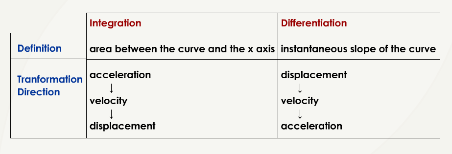
Sample differentiation
Example problem: find acceleration from the velocity vs. time curve.
Sample differentiation
Solution
- Use the equation for acceleration.
- Find the differences between successive points of time and velocity respectively.
- Divide the difference in velocity by the difference in time.
a = Δ velocityΔ time
Sample differentiation
Sample differentiation
Velocity in, acceleration out.
Calculus and kinematics
Determine point displacement from video analysis, then differentiate to find velocity and acceleration.
Calculus and kinematics
Where the numbers come from: marker positions, captured frame by frame.


The cameras measure one thing: where each marker is, in every frame. That is displacement — nothing else is recorded.
The fan is not an extra measurement. It is simply every frame drawn on top of the last, which is why the club is bunched where it is slow and spread where it is fast.
Speed and acceleration of the club head are then calculated — one derivative each — exactly as on the previous slide.
Calculus and kinematics
Differentiation will help to determine velocity from displacement and acceleration from velocity — but how would we determine velocity from acceleration, and displacement from velocity? First we need to rearrange our original equations to see how they fit together.
We know that
acceleration = change in velocitychange in time
Therefore velocity = acceleration × time
This is the area under the acceleration–time graph.
We also know that
velocity = change in displacementchange in time
Therefore displacement = velocity × time
This is the area under the velocity–time graph.
Why is it the area from a graph?
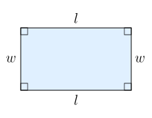
Area of a rectangle = length (l) × width (w)
velocity = time × acceleration
Calculus and kinematics
This only provides the final velocity as a factor of the acceleration acting over an amount of time.
What if we want to know the velocity at different times along the way?
Calculus and kinematics
Notice that the velocity at any point is the cumulative sum of all the acceleration values up to that time.
Calculus and kinematics
- In the previous example it was easy to calculate the area under the curve — but how do we calculate the area under a complex plot?
- Imagine filling the area under the plot with rectangles.
- Calculate the sum of their areas.
- But we are missing some area. What should we do?
Calculus and kinematics
- The thinner the rectangles, the less error there is in the estimate of the total area under the curve.
- As the rectangles become infinitely thinner, the estimate becomes more accurate.
Calculus and kinematics
- This is closer to the actual area…
- But how can we keep doing this?
Integration
Unless calculus can help? Of course it can.
Integration — "to make into a whole" — a way to determine the area under the curve. There are 3 ways to calculate it:
- Riemann sum method — add up the area from rectangles.
- Integral sum — cumulatively sum all the points in the curve.
- Remember that the velocity at any point in time was the cumulative sum of the acceleration.
- Analytical method — using equations again.
Integration
2 4 6 8 10 12 14 16 18 20
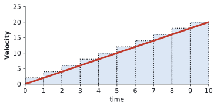
2 + 4 + 6 + 8 + 10 + 12 + 14 + 16 + 18 + 20
2 6 10 18 28 40 54 70 88 108
???
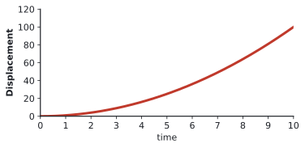
But do we have too much area?
Riemann sum
The Riemann sum is a method used to approximate the area under a curve. The basic idea is to:
- divide the area under a curve into small rectangles (or sometimes trapezoids);
- calculate the area of each rectangle;
- sum these areas to get the total approximate area under the curve.
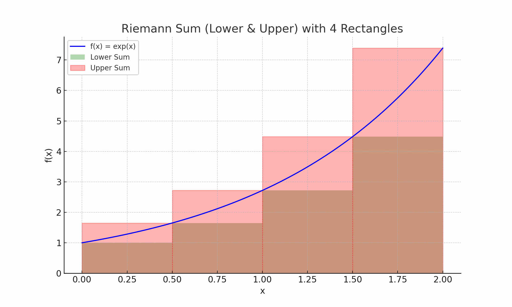
Riemann rectangle and trapezoidal method
With the Riemann sum method there is a tendency to overestimate and underestimate the areas, whether using an upper, lower, middle or trapezoidal estimate.
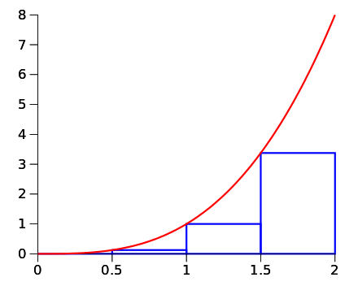
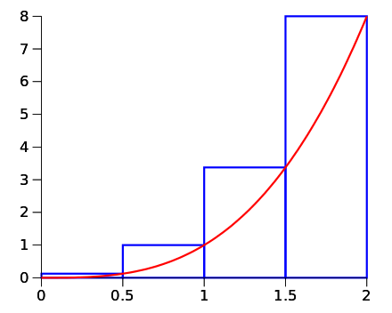
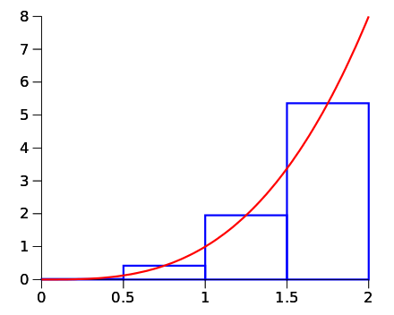
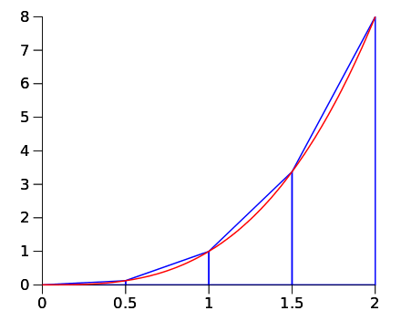
Riemann sum and integral sum
- A Riemann sum is an approximation method for calculating the area under a curve.
- An integral (definite integral) represents the exact value of this area, and is often calculated as the limit of Riemann sums as the subdivisions become infinitely small.
- Integrals are denoted by the integral sign ∫, with the function to be integrated followed by dx, which represents an infinitesimally small width of the subdivision.
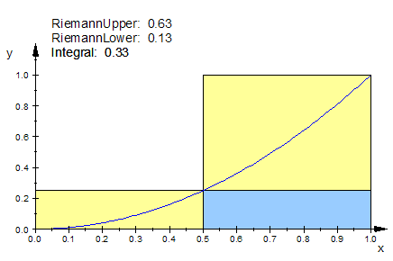
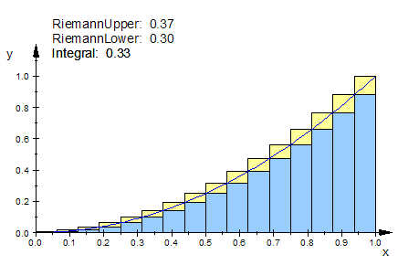
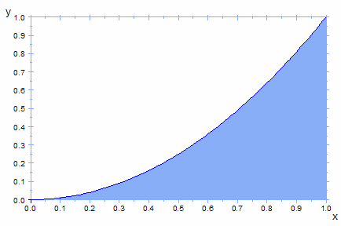
Integral sum
- The integral sum is similar to the Riemann sum, but we add rectangles (or trapezoids) with the smallest width possible to increase the accuracy of the estimate.
- The smallest width possible is the time between each data point — i.e. 1 / sampling frequency.
- Therefore we multiply the height (y-value) by the width between data points, then cumulatively sum the results.

Example integration
Example problem: integrate the velocity vs. time curve.
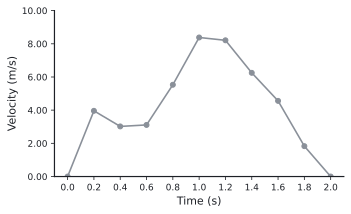
| Time (s) | Velocity (m/s) |
|---|---|
| 0.0 | 0.00 |
| 0.2 | 3.96 |
| 0.4 | 3.02 |
| 0.6 | 3.11 |
| 0.8 | 5.53 |
| 1.0 | 8.38 |
| 1.2 | 8.21 |
| 1.4 | 6.25 |
| 1.6 | 4.56 |
| 1.8 | 1.83 |
| 2.0 | 0.00 |
Example integration
Solution
- Multiply each y-value by the time between each data point (0.2 s).
- To determine each new point on the position vs. time plot, sum the products from the first point up to the new point.
- The total integral ends up being 8.970 m — however, we want a displacement time series, not a single value for the total displacement.
- Note: we have calculated the change in position, but we still don't know the starting position.
Example integration
| Time (s) | v × Δt (m) | Position (m) |
|---|---|---|
| 0.0 | — | 0.000 |
| 0.2 | 0.792 | 0.792 |
| 0.4 | 0.604 | 1.396 |
| 0.6 | 0.622 | 2.018 |
| 0.8 | 1.106 | 3.124 |
| 1.0 | 1.676 | 4.800 |
| 1.2 | 1.642 | 6.442 |
| 1.4 | 1.250 | 7.692 |
| 1.6 | 0.912 | 8.604 |
| 1.8 | 0.366 | 8.970 |
| 2.0 | 0.000 | 8.970 |
t = 0.0 s — since we aren't given any information regarding the starting position, we must assume that the position at time 0.0 s is 0.00 m.
t = 0.2 s — add the product of the velocity and time interval for t = 0.0 s and t = 0.2 s: 0.000 m + 0.792 m = 0.792 m.
t = 0.4 s — 0.00 m + 0.792 m + 0.604 m = 1.396 m, and so on.
Continue this process until the position has been calculated for all time points, then plot the new data set.
Calculus and kinematics
Analytical method
If we know the equation of a graph of data in the form c tn, then we can determine the integral of that equation — the area under that curve.
What is the implication of this in human movement?
If we can determine an integral then we can
- solve for velocity if we have acceleration;
- solve for displacement if we have velocity.
Integral transfer function
To find the area under a curve for a given equation you need to use the integral transfer function.
That is, you add 1 to the exponent and then divide the term by n + 1.
Integral transfer function
Find the integral of the acceleration equation we solved for earlier: a(t) = −6t + 12
- First split the equation into terms: −6t and 12
- Then use the transfer function on each term:
- Add 1 to the exponent, then divide by n + 1.
Integral transfer function
We could do this again to solve for the displacement equation from v(t) = −3t2 + 12t
- First split the equation into terms: −3t2 and 12t
- Then use the transfer function on each term:
- Add 1 to the exponent, then divide by n + 1.
Calculus and kinematics
Area of a rectangle = length (l) × width (w)
velocity = time × acceleration
But this is assuming that the initial velocity was zero.
Calculus and kinematics
While we know the shape of the curve, the initial values tell us where to draw the curve on the graph — and they affect every value on the graph.
- …if the initial velocity was 15
- …if the initial velocity was 10
- …if the initial velocity was zero
Calculus and kinematics
Since we don't know what happens at t = 0 (the initial values), we need to add an unknown to the integral transfer function.
That is, you divide the term ctn by n + 1, add 1 to the exponent, and add a constant for initial values (bo).
Integral transfer function
This transfer function will give us a kinematic equation (function) that lets us determine the area under a curve.

Experimental application
Image analysis
Measure displacement and find acceleration using a web camera.
Accelerometer
Measure acceleration and find displacement using an accelerometer.


Experimental application


Experimental application
- From this experiment I have data for both the image displacement and the accelerometer in the phone.
- I chose to analyse linear motion in the z axis (up–down) only.
- The following slides show my data analysis as I try to use the integral sum method to determine displacement from the accelerometer data (100 Hz), and to determine acceleration from video footage (60 fps).
Experimental application

- Some basic analysis in Excel
- IMU — acceleration
- Velocity
- Displacement
Experimental application
Accelerometer → displacement
(integral sum method)
Displacement data from video
Ok… so what went wrong?
Experimental application
Acceleration from accelerometer data
Video displacement → acceleration
(finite difference)
Experimental application
Velocity from accelerometer using integral sum
Video displacement → velocity
(finite difference)
Experimental application
The video analysis, one frame at a time: y is measured, v and a are calculated from it.
Experimental application
An issue with integral sum is that you cumulatively sum the signal — but also any error that may be present.
Experimental application
The same trial, as it was worked through in the spreadsheet.
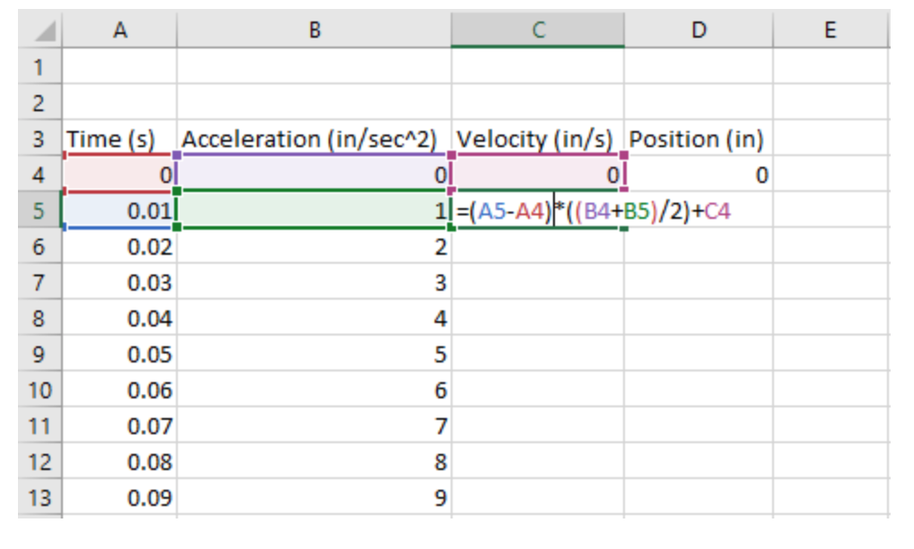
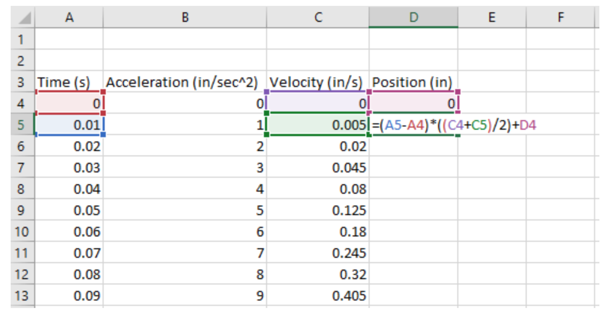
An issue with integral sum is that you cumulatively sum the signal — but also any error that may be present.
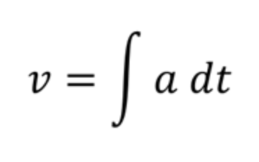
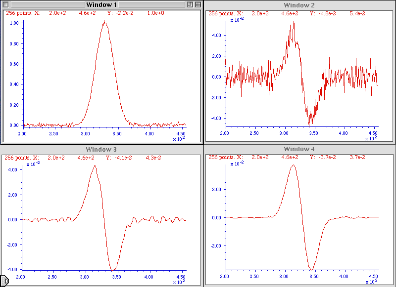